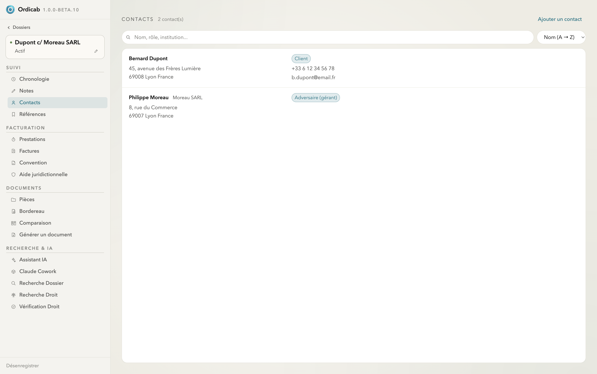
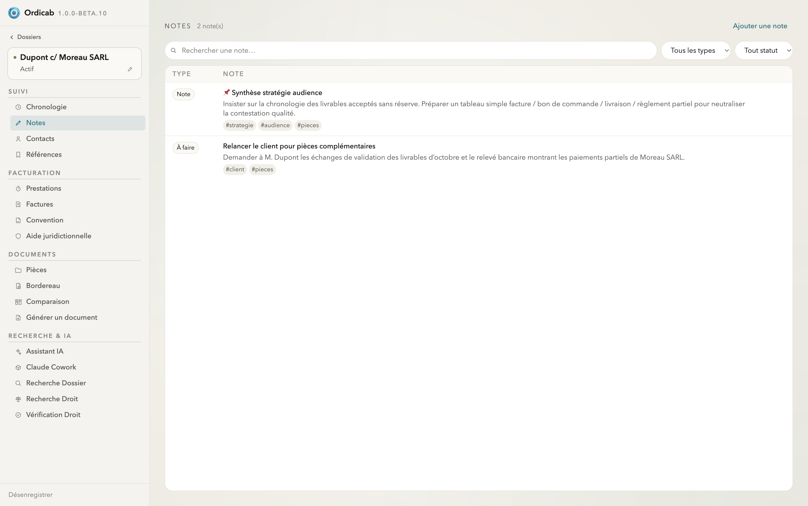
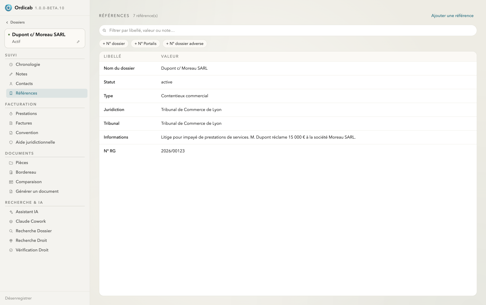

Dossiers : vue d'ensemble
Chaque dossier est l'unité centrale d'Ordicab. Il regroupe tout ce qui concerne une affaire : suivi (notes, contacts, références, chronologie), facturation (convention, prestations, factures, aide juridictionnelle), documents (pièces, bordereau, comparaison, génération) et outils de recherche & IA.
La liste des dossiers
La colonne de gauche liste vos affaires. Vous pouvez les filtrer par statut (Actif, En attente, Terminé, Archivé) et les trier (alphabétique, prochaine date clé, dernier ouvert). Le bouton + enregistre un nouveau dossier à partir d'un sous-dossier du domaine.
Navigation d'un dossier
Une fois un dossier ouvert, une barre latérale de second niveau organise toutes ses sections en quatre blocs :
- Suivi — Chronologie, Notes, Contacts, Références ;
- Facturation — Prestations, Factures, Convention, Aide juridictionnelle ;
- Documents — Pièces, Bordereau, Comparaison, Générer un document ;
- Recherche & IA — Assistant IA, Claude Cowork, Recherche Dossier, Recherche Droit, Vérification Droit.
Contacts
Chaque dossier a sa propre liste de contacts, classés par rôle : client, adversaire, confrère, juridiction, tiers (expert, huissier, notaire…). Leurs coordonnées alimentent la génération de documents et le contexte de l'IA.

Onglet Contacts — intervenants du dossier classés par rôle
Notes
Consignez vos observations sous forme de notes typées (note libre ou « à faire »), avec des tags pour les retrouver. Les notes font partie du contexte exploité par l'assistant IA du dossier.

Onglet Notes — notes typées et taguées (stratégie, audience, pièces…)
Références
Les références sont les variables structurées du dossier (nom, statut, type, juridiction, tribunal, n° RG, informations…). Elles sont injectées automatiquement dans les documents générés depuis vos modèles.

Onglet Références — variables structurées du dossier, réutilisées dans les modèles
Suivant : Facturation & honoraires →